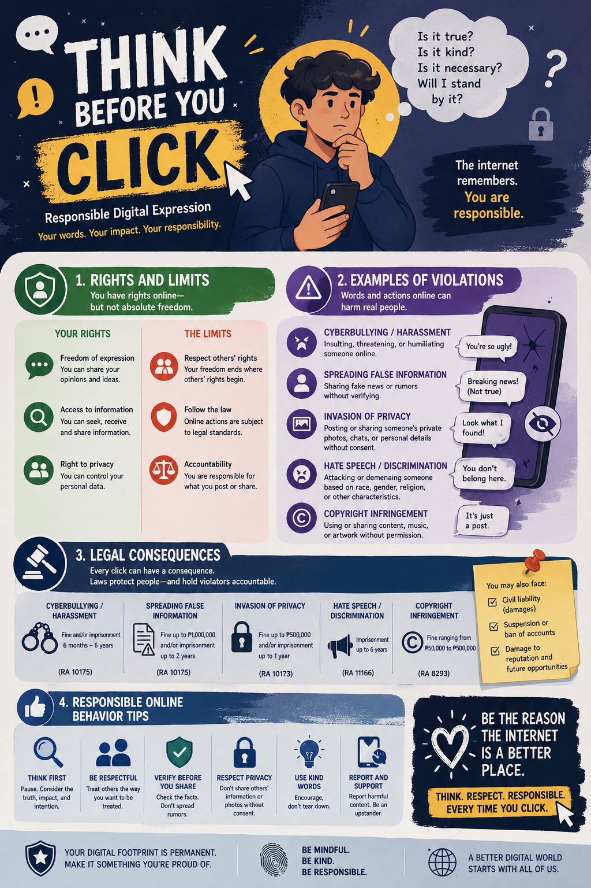

"Think Before You Click: Responsible Digital Expression" — A call to awareness, education, and conscious participation in the digital sphere with respect for rights and responsibility for impact.
A complete visual guide to your rights, limits, violations, and consequences online.

Your words. Your impact. Your responsibility. This infographic summarizes your digital rights, the limits of online expression, common violations, and their legal consequences under Philippine law.
Awareness through relatable and shareable content.
Because sometimes the best way to learn is through a relatable format. These memes highlight the real legal weight behind everyday online actions.
Verify information before sharing — fact-check with credible sources.
Avoid posting content that targets, humiliates, or threatens individuals.
Respect others' privacy — never share personal information without consent.
Disagree respectfully — criticism is healthy, personal attacks are not.
Report harmful content instead of amplifying it through shares.
Remember: what you post online is permanent and traceable.